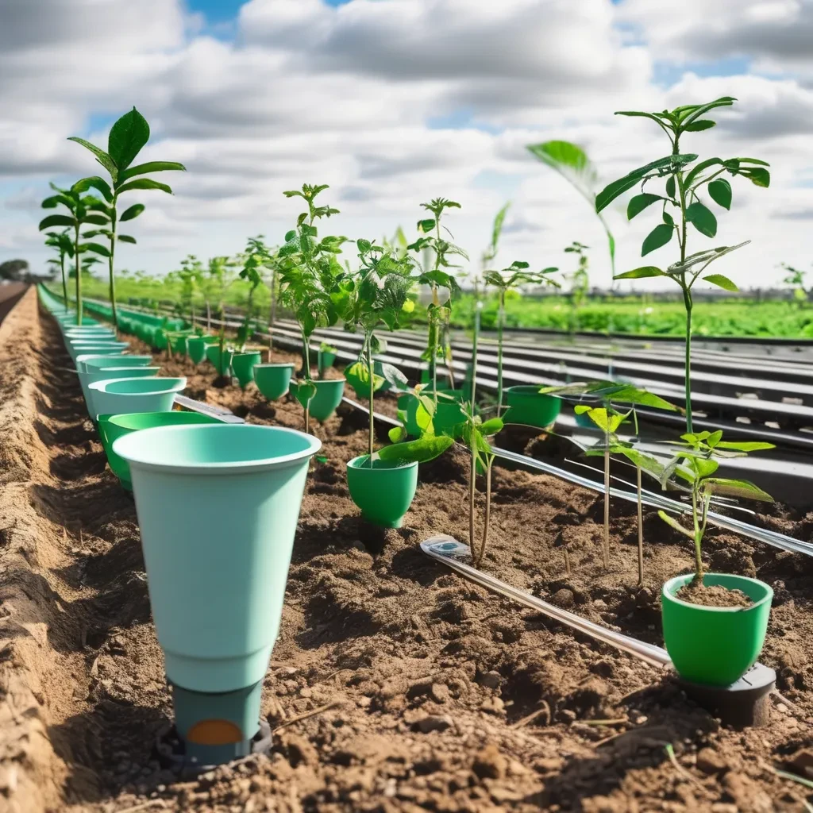

DRONE
Uma das ferramentas modernas com maior variedade de uso é o drone, que ganhou espaço na produção agropecuária por poder ser de fácil integração a sistemas de dados, ter um custo-benefício relativamente baixo e ainda promover eficácia em frentes distintas, como: análise de plantação, acompanhamento do desenvolvimento da safra, demarcação do solo, pulverização, vigilância, telemetria, contagem de animais.
SRINPKLES
A proteção por sprinklers automáticos tem um histórico comprovado na redução de perdas materiais, e proporciona maior resiliência contra o risco de incêndio. Além destes fatores, sistemas de sprinklers beneficiam o meio ambiente na medida em que contribuem para limitar as consequências ambientais resultantes de um incêndio, como as emissões de carbono e a utilização de água para combate ao fogo. O resultado é a redução nos custos e nas quantidades de materiais requeridos para restauração de edifícios e equipamentos afetados, bem como nos esforços de limpeza e descontaminação dos locais atingidos. A instalação de sprinklers é, portanto, uma opção ambientalmente sustentável.
SENSORES

Os sensores na agricultura são implementos tecnológicos capazes de avaliar com precisão situações como imagens de satélite, análises de solo, além de monitoramento de pragas e doenças. Ou seja, são fundamentais em diversas etapas da produção e permitem enxergar, com precisão, a saúde da plantação. Eles se apresentam em sistemas ópticos, elétricos ou térmicos, os quais conseguem identificar os problemas já no início para um tratamento eficaz. Por isso, proporcionam maior produtividade e melhor custo-benefício à safra. Esses dispositivos podem ser instalados em drones e acoplados em máquinas agrícolas.
AUTOMAÇÃO
A automação é definida como o uso de tecnologia para realizar tarefas com o mínimo de intervenção humana necessária. Embora possa ser aplicada em qualquer setor que envolva tarefas repetitivas, é mais comum em setores como manufatura, robótica, automotivo e tecnologia. Na área de tecnologia, a automação é frequentemente utilizada em sistemas de TI e software de tomada de decisão de negócios, permitindo que as empresas executem tarefas complexas de forma mais rápida e eficiente. A automação na agricultura é representada a partir do uso de tecnologias para automatizar processos de produção, desde a plantação até a colheita. Isso inclui o uso de recursos como drones, sensores, sistemas de irrigação, entre outros dispositivos que automatizam tarefas antes realizadas manualmente.
PLACAS SOLARES
A agricultura de precisão necessita de energia elétrica para utilizar recursos tecnológicos na avaliação de características do clima e solo na produção rural. Então, a energia solar otimiza essa técnica e pode ajudar a gerar dados ainda mais precisos, já que a automação ganha mais eficiência